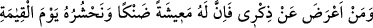
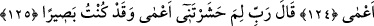
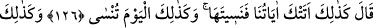
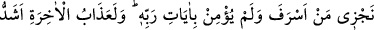
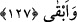

ALLAH’I ZİKRETMEYENİN
ÂKIBETİ
124. Kim de beni anmaktan yüz çevirirse şüphesiz onun sıkıntılı bir hayatı olacak
ve biz onu, kıyamet günü kör olarak haşredeceğiz.
125. O: “Rabbim! Beni niçin kör olarak haşrettin? Oysa ben, hakikaten görür
idim!” der.
126. (Allah) buyurur ki: “İşte böyle. Çünkü sana âyetlerimiz geldi; ama sen
onları unuttun. Bugün de aynı şekilde sen unutuluyorsun!”
127. Doğru yoldan sapanı ve Rabbinin âyetlerine inanmayanı işte böyle
cezalandırırız. Ahiret azabı, elbette daha şiddetli ve daha süreklidir.
“Kim de beni anmaktan” yani, beni hatırlatan kitaptan ve bana dâvet eden
peygamberden “yüz çevirirse şüphesiz onun” dünyada “sıkıntılı” dar “bir hayatı
olacak.”
Daha önce geçtiği üzere “ez-zikr” gerek Kur’an, gerekse diğer ilâhî kitaplar hakkında
kullanılan bir tâbirdir.
“
” lafzı, masdardır. Mübâlağa olmak üzere “hayat” onunla vasfedilmiştir.
“Sıkıntılı hayat”tan maksad, darlık içinde bir yaşantı demektir. Çünkü âhirete tâlib olan
mü’mininin aksine böyle bir kimse sadece dünyevî maksadlar peşindedir. Onu artırmak
için kendisini parçalar ve azalmasından da korkar. Halbuki Allah küfrün uğursuzluğu
sebebiyle onun geçimini daraltır, îmanın bereketiyle genişletir.
Bil ki günah işlemenin cezâlarından biri de geçim darlığı/sıkıntılı hayattır. Nefse,
hemcinslere ve mükevvenâta geri çevirilmek/reddolunmak da sıkıntılı hayata dâhildir.
et-Te’vîlâtü’n-Necmiyye’de şöyle der: “Hakîkatte hidâyet, onunla kendisine
yönelmeleri için peygamberlerin ve evliyânın kalplerine Allâh’ın bıraktığı bir nurdur.
Görünüşte ise peygamberlerden sonra önde gelen âlimler ve takvâsı ile örnek olan
meşâyıhtır. Teslîmiyet, rızâ ve insanlara güzel örnek olmakla “kim benim hidâyetime
uyarsa o” Hakk’ın yolundan “sapmaz ve” mahrum olarak ve hakîkî hicran sebebiyle
“bedbaht olmaz.”
“Kim de beni anmaktan yüz çevirirse;” yani kendisine gelip ulaştığı zaman benim